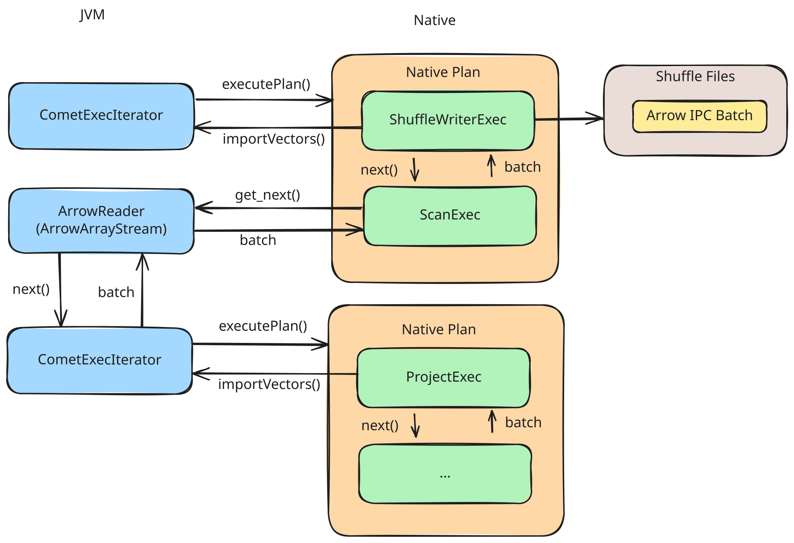

Arrow FFI Usage in Comet#
Overview#
Comet transfers Arrow data across the JVM/native boundary in two directions:
JVM → Native: Native code pulls batches from the JVM over the Arrow C Stream Interface. The JVM exports each per-partition iterator once as an
ArrowArrayStream, and native pulls every batch through a single C callback.Native → JVM: JVM pulls batches from native code using
CometExecIterator, via the Arrow C Data Interface (oneArrowArray/ArrowSchemapair per column of each batch).
The following diagram shows an example of the end-to-end flow for a query stage.

Both scenarios use the same FFI mechanism but have different ownership semantics and memory management implications.
Arrow FFI Basics#
The Arrow C Data Interface defines two C structures:
ArrowArray: Contains pointers to data buffers and metadataArrowSchema: Contains type information
The Arrow C Stream Interface builds on these with a third structure:
ArrowArrayStream: A stream ofArrowArrays sharing oneArrowSchema, pulled one at a time through aget_nextC callback. This is how Comet transfers JVM-sourced input (see below).
Key Characteristics#
Zero-copy: Data buffers can be shared across language boundaries without copying
Ownership transfer: Clear semantics for who owns and must free the data
Release callbacks: Custom cleanup functions for proper resource management
JVM → Native Data Flow (ScanExec)#
Architecture#
When native code needs data from the JVM, it uses ScanExec, which is backed by an Arrow C Stream that the JVM
exports once per partition:
┌─────────────────┐
│ Spark/Scala │
│ Iterator of │
│ batches or rows │
└────────┬────────┘
│ wrapped in an ArrowReader, exported once
│ via Data.exportArrayStream
▼
┌─────────────────┐
│ ArrowArrayStream│ ── JVM side: one C stream struct per partition
│ (C struct) │
└────────┬────────┘
│ Arrow C Stream Interface
│ (native pulls each batch via the get_next callback)
▼
┌─────────────────┐
│ ScanExec │ ── owns an ArrowArrayStreamReader
│ (Rust/native) │
└────────┬────────┘
│
▼
┌─────────────────┐
│ DataFusion │
│ operators │
└─────────────────┘
Stream Export and Import#
On the JVM side, CometArrowStream (in execution/arrow/CometNativeArrowSource.scala) wraps each per-partition
input in an org.apache.arrow.vector.ipc.ArrowReader and exports it once with Data.exportArrayStream. The reader
implementation depends on the source of the data:
RowArrowReader: a SparkIterator[InternalRow](row input)SparkColumnarArrowReader: a non-Arrow SparkColumnarBatchColumnarBatchArrowReader: an Arrow-backedColumnarBatch(transfersVectorSchemaRootownership)
The exported ArrowArrayStreams are boxed into the Array[Object] that CometExecIterator / CometExecRDD pass
to native createPlan, one slot per scan input.
Not every slot is an Arrow stream. When a native operator consumes Comet shuffle output and
spark.comet.shuffle.directRead.enabled is set, that slot carries a CometShuffleBlockIterator instead, and the
compressed shuffle blocks are decoded inside the native plan by ShuffleScanExec rather than crossing this FFI
boundary at all. CometExecRDD.resolveInputObjects classifies the slots, driven by which scan slots the serialized
plan marked as ShuffleScan. See Direct Read for that path.
On the native side, planner.rs reads each stream’s memoryAddress and takes ownership through arrow-rs’s
ArrowArrayStreamReader::from_raw, importing the schema once. ScanExec::get_next_batch then pulls each batch
through the stream’s get_next callback. There is no per-batch JNI call and no per-column FFI export.
ScanExec::pull_next passes every imported column through import_column, which decodes invalid UTF-8 to Spark’s
rendering and otherwise uses the column as imported, without a copy.
Java’s allocator only guarantees 8-byte alignment, while arrow-rs needs Decimal128 buffers 16-byte aligned. arrow-rs
realigns under-aligned buffers on import (apache/arrow-rs#10030), and
the realigns_under_aligned_decimal128 test in scan.rs guards against an arrow downgrade that would bring back the
panic (apache/arrow-rs#10028).
Errors from the JVM Producer#
Arrow Java’s exported stream catches whatever the reader throws in get_next and hands native only its text, so
native fails the plan with a CometNativeException built from that text. CometArrowStream.stream wraps every
reader to keep the throwable itself until the task completes, and CometExecIterator rethrows it in place of the
native error. The task then fails with the exception Spark would have thrown, such as a SparkArithmeticException
from an upstream plan. For an input of Arrow-backed ColumnarBatches, the first batch never takes this path: schema
reconciliation reads it on the JVM before the stream is exported, so what it throws propagates directly. A test of
this path therefore has to fail a later batch.
Schema Reconciliation#
CometArrowStream.reconcileStreamSchema advertises the stream’s schema from the actual CometVector types in the
first batch rather than the consumer’s Spark-declared types. Native ScanExec already casts its input to the
declared scan-input schema in build_record_batch, so the truthful first-batch schema lets that cast fire; if the
two differ, it logs one deduplicated warning naming the operator, column, and type drift.
No input stream carries a dictionary. RowArrowReader and SparkColumnarArrowReader write plain vectors, and
ColumnarBatchArrowReader decodes a dictionary-encoded column on the JVM before export, which is why
reconcileStreamSchema advertises the dictionary’s value type for it.
Memory Layout#
When a batch is transferred from JVM to native:
JVM Heap: Native Memory:
┌──────────────────┐ ┌──────────────────┐
│ ColumnarBatch │ │ FFI_ArrowArray │
│ ┌──────────────┐ │ │ ┌──────────────┐ │
│ │ ArrowBuf │─┼──────────────>│ │ buffers[0] │ │
│ │ (handle) │ │ │ │ (pointer) │ │
│ └──────────────┘ │ │ └──────────────┘ │
└──────────────────┘ └──────────────────┘
│ │
│ │
Off-heap Memory: │
┌──────────────────┐ <──────────────────────┘
│ Actual Data │
│ (e.g., int32[]) │
└──────────────────┘
Key Point: The actual data buffers are shared zero-copy; native only takes pointers to the off-heap buffers.
Ownership and Lifecycle#
The Arrow C Stream Interface transfers ownership by reference count: native takes ownership of each imported batch,
so it is safe to buffer batches in operators such as SortExec or ShuffleWriterExec without a deep copy.
The whole per-partition stream is exported once, so the JVM allocates one ArrowArrayStream per partition rather
than a per-batch, per-column ArrowArray/ArrowSchema wrapper object pair. Lifecycle is anchored at the stream: when
ScanExec drops its ArrowArrayStreamReader, the stream’s release callback fires synchronously back into the JVM
and closes the ArrowReader and its VectorSchemaRoot, releasing the off-heap buffers. Because native holds those
buffers until the reader drops, an operator that buffers many batches keeps the corresponding JVM-side data alive
until then.
Native → JVM Data Flow (CometExecIterator)#
Architecture#
When the JVM needs results from native execution:
┌─────────────────┐
│ DataFusion Plan │
│ (native) │
└────────┬────────┘
│ produces RecordBatch
▼
┌─────────────────┐
│ prepare_output │ ── fills one ArrowArray/ArrowSchema pair per column
│ (Rust/native) │
└────────┬────────┘
│ Arrow C Data Interface
│ (structs allocated by the JVM, filled by native)
▼
┌─────────────────┐
│ NativeUtil │ ◄─── CometExecIterator calls Native.executePlan
│ (Scala side) │ once per batch
└────────┬────────┘
│ ColumnarBatch of CometVectors
▼
┌─────────────────┐
│ Spark and Comet │
│ JVM operators │
└─────────────────┘
Transfer Process#
CometExecIterator.hasNext fetches each batch through NativeUtil.getNextBatch, with one JNI call per batch:
NativeUtil.getNextBatchallocates one emptyArrowArray/ArrowSchemapair per output column fromCometArrowAllocatorand passes their memory addresses toNative.executePlan(stage, partition, plan, arrayAddrs, schemaAddrs).executePlan(injni_api.rs) polls the native plan for its nextRecordBatch, andprepare_outputexports each column into its pair withmove_to_spark(inexecution/utils.rs).move_to_sparkzeroes the column’s offsets (see Array Offsets), then writes anFFI_ArrowArrayover the result, and anFFI_ArrowSchemabuilt from its data type and field metadata, into the JVM-allocated structs.executePlanreturns the batch’s row count, or-1at the end of the output. Withspark.comet.debug.enabledset,prepare_outputfirst runsvalidate_fullon every column.At the end of the output,
NativeUtilreleases the unused structs. OtherwiseNativeUtil.importVectorimports each column withArrowImporter.importVector, wraps it withCometVector.getVector, and returns the vectors as aColumnarBatch.
ArrowImporter (in spark/src/main/java/org/apache/arrow/c/) imports every column through one shared
SchemaImporter. Arrow Java’s own Data.importField creates a new SchemaImporter for each field, and each one
numbers dictionaries from 0, so two dictionary-encoded columns would collide in the shared CDataDictionaryProvider.
Array Offsets#
Arrow Java’s C Data import ignores ArrowArray.offset at every level
(apache/arrow-java#88) and reads each buffer from its start. arrow-rs
folds a slice into the buffers for almost every type, but a sliced BooleanArray keeps its bit offset, and a struct
exports offset 0 even when its children are sliced. So every array native exports to the JVM first goes through
zero_offsets (in native/common/src/ffi_offsets.rs), which re-slices boolean bitmaps to start at bit 0 at every
level and shares every other buffer. move_to_spark applies it to executed batches and decoded shuffle blocks, and
JvmScalarUdfExpr applies it to the inputs of the JVM UDF bridge. A new native to JVM export path has to call it too,
or sliced booleans reach the JVM misaligned
(#6288).
Ownership and Lifecycle#
Native allocates the data, and the JVM references it without copying:
The
FFI_ArrowArraythatmove_to_sparkwrites holds a reference to the column’s native buffers, and its release callback drops that reference.On import, Arrow Java wraps each native buffer in an
ArrowBuf. Closing the lastArrowBufover an imported column runs its release callback, and native frees the buffers once no Rust reference to them remains.CometExecIteratorcloses the batch it returned when the consumer next callshasNextornext, and onclose(). A batch is therefore valid only until the consumer asks for the next one, and a consumer that keeps the data longer has to copy it.
By the time the JVM receives a batch, native has usually stopped reserving it in the memory pool, but it stays resident until the JVM closes it. See Crossing the FFI boundary.
Memory Ownership Rules#
JVM → Native#
Scenario |
Ownership |
Action Required |
|---|---|---|
All cases |
Native owns |
None; the C Stream transfers ownership by reference count. Dropping the reader releases the JVM-side data |
Native → JVM#
Scenario |
Ownership |
Action Required |
|---|---|---|
All cases |
Native allocates, JVM references |
JVM must call |